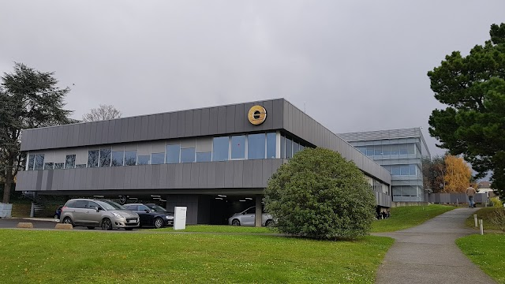

Compétences
Programmation
Je maîtrise les langages de programmation Java, Python et C. Couplé à cela, je suis également capable d'utiliser différentes librairies afin de réaliser des projets plus complexes.
Programmation web
Je suis capable de créer des sites web dynamiques en utilisant les technologies du web moderne, principalement le HTML, le CSS et le JavaScript. Je peux également
mettre en place des serveurs PHP, Flask, JEE ou Node.js.
Bases de données
Je suis capable de concevoir et de gérer des bases de données relationnelles et non relationnelles, notamment SQLite, MySQL, Oracle et Postgresql.
Je suis également capable d'utiliser des bases de données en mémoire comme Redis.
Environnements de développement
Je suis à l'aise avec différents environnements de développement, notamment les IDE de JetBrains (IntelliJ, PyCharm, Android Studio...) et Visual Studio Code.
Je suis également à l'aise avec les systèmes d'exploitation Windows et Linux (Debian, CentOS).
Soft Skills
Je possède plusieurs compétences transversales qui me permettent de collaborer efficacement au sein d'une équipe et de m'adapter aux différents environnements de travail.
Armé de plusieurs hard skills, je suis polyvalent et capable de m'adapter rapidement aux différents contextes de travail.
Je suis également rigoureux et observateur, ce qui me permet de détecter les erreurs et les incohérences dans les projets sur lesquels je travaille, ainsi que de trouver des solutions efficaces pour les résoudre.
Je suis également adapté au travail d'équipe, ayant un esprit de collaboration et de respect pour les idées des autres pouvant contribuer à la réussite des projets.
Enfin, je suis curieux et ouvert d'esprit, ce qui me permet de m'adapter facilement aux nouvelles technologies et aux évolutions du domaine.
Expériences professionnelles
Stage chez Givaudan France - 2025
J’ai effectué mon stage de deuxième année de BUT Informatique chez Givaudan France, au sein de l’équipe Service Desk, composée d’ingénieurs helpdesk.
Givaudan conçoit et commercialise des compositions et ingrédients destinés à des secteurs variés tels que la parfumerie, les arômes alimentaires et les
produits cosmétiques. Leader dans son domaine, l’entreprise participe régulièrement à des appels d’offres pour proposer ses solutions à de grandes marques
internationales, dans un marché très concurrentiel.
Durant mon stage, j’ai pris part à plusieurs missions courantes du Service Desk, tout en ayant l’opportunité de contribuer à des projets plus spécifiques, notamment la maintenance et
l'amélioration d'un site interne utilisé par le service technique de l’entreprise pour la gestion de leurs demandes d’assistance et de leurs interventions. Cela m'a permis de développer
de nouvelles compétences techniques et de mieux me connaître professionnellement. Cette expérience a également contribué à définir plus précisément mes perspectives d’avenir.
Je suis satisfait du déroulement de ma première immersion professionnelle et je suis reconnaissant de l’aide reçue de la part de mon responsable de stage et
de mes collègues au sein du Service Desk pour m’intégrer et atteindre les objectifs fixés à mon arrivée.
Je garde un excellent souvenir de cette première immersion professionnelle, et je suis reconnaissant envers
mon maître de stage ainsi que l’ensemble de l’équipe du Service Desk pour leur accompagnement, leur disponibilité et leur bienveillance tout au long de cette expérience.
